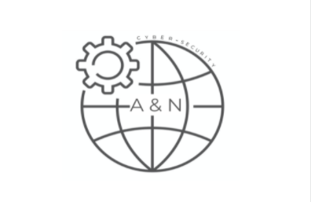
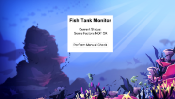

The goal of this project was to combine our knowledge of basic algorithms and modern day issues with the use of art. To achieve this goal, my partner and I developed an animation using the Turtle() module from python. The animation depicts a turtle getting caught in a stray fishing net, and passing away. Then there is an end screen with a call to action for the reader, with links to organizations that help end this issue. Overall, our teamwork throughout the project was great. Constant communication outside of class enabled us to stay on the same page the entire time, ensuring an efficient completion of the project. There were not any major challenges to do with the coding aspect of this project, however, because we coded on separate devices, combining the code became challenging. We were able to overcome this hurdle by utilizing our great communication skills. The main takeaway from this project was the scrum process. This was my first time ever utilizing such a process to effectively plan, document, and complete a project. This exposure to a “real life” workflow was greatly beneficial.


JSDJKJLL Cybersecurity
The goal of this project was to combine our knowledge of basic algorithms and modern day issues with the use of art. To achieve this goal, my partner and I developed an animation using the Turtle() module from python. The animation depicts a turtle getting caught in a stray fishing net, and passing away. Then there is an end screen with a call to action for the reader, with links to organizations that help end this issue. Overall, our teamwork throughout the project was great. Constant communication outside of class enabled us to stay on the same page the entire time, ensuring an efficient completion of the project. There were not any major challenges to do with the coding aspect of this project, however, because we coded on separate devices, combining the code became challenging. We were able to overcome this hurdle by utilizing our great communication skills. The main takeaway from this project was the scrum process. This was my first time ever utilizing such a process to effectively plan, document, and complete a project. This exposure to a “real life” workflow was greatly beneficial.
A & N Cybersecurity
The goal of this project was to combine our knowledge of basic algorithms and modern day issues with the use of art. To achieve this goal, my partner and I developed an animation using the Turtle() module from python. The animation depicts a turtle getting caught in a stray fishing net, and passing away. Then there is an end screen with a call to action for the reader, with links to organizations that help end this issue. Overall, our teamwork throughout the project was great. Constant communication outside of class enabled us to stay on the same page the entire time, ensuring an efficient completion of the project. There were not any major challenges to do with the coding aspect of this project, however, because we coded on separate devices, combining the code became challenging. We were able to overcome this hurdle by utilizing our great communication skills. The main takeaway from this project was the scrum process. This was my first time ever utilizing such a process to effectively plan, document, and complete a project. This exposure to a “real life” workflow was greatly beneficial.